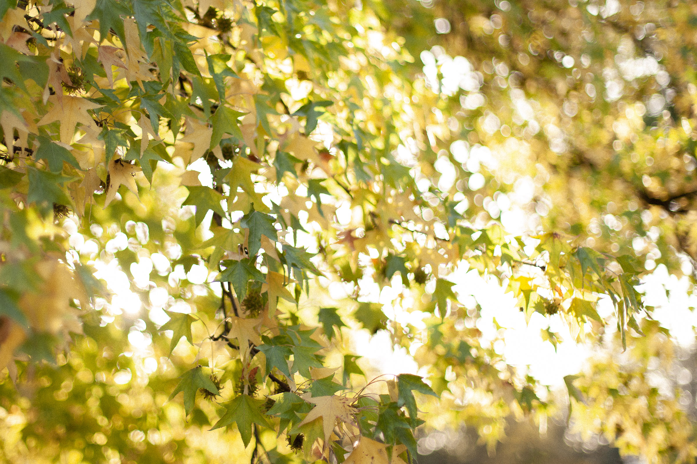
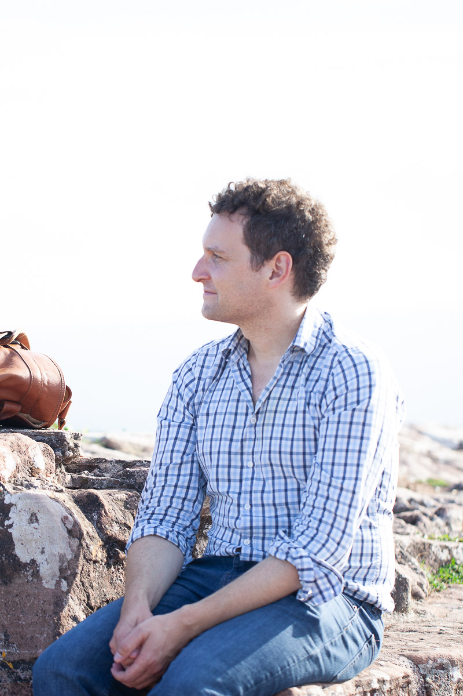

Tout commence par un échange.
Vous préparez un mariage, vous avez envie de photographies à deux ou vous pensez à un portrait depuis quelque temps ? Vous pouvez m’écrire même si votre projet commence tout juste à prendre forme.
Parlons de ce que vous imaginez
Racontez-moi simplement ce qui vous amène : l’occasion, les personnes qui seront présentes, un lieu auquel vous tenez ou ce que vous aimeriez retrouver dans vos images.
Si vous avez déjà une date et un lieu, notamment pour un mariage, pensez à les préciser. Pour une séance, quelques mots sur vos envies et la période envisagée constituent un bon point de départ.
Vous pouvez aussi me faire part de vos questions ou de vos hésitations, y compris si vous n’êtes pas très à l’aise devant un appareil. Nous pourrons parler de la manière dont se déroule une séance et imaginer ensemble ce qui vous conviendrait.
Écrivez-moi
Je suis installé en Alsace près de Saverne, et je me déplace dans toute l’Alsace et ailleurs selon les projets.
Pour me présenter le vôtre ou me poser une question, vous pouvez me contacter directement par e-mail :

Découvrir mon travail au fil des jours
Je partage également sur Instagram mes derniers reportages et quelques moments de mon quotidien de photographe. Vous y retrouverez les rencontres, les lieux et les lumières qui nourrissent mon regard.